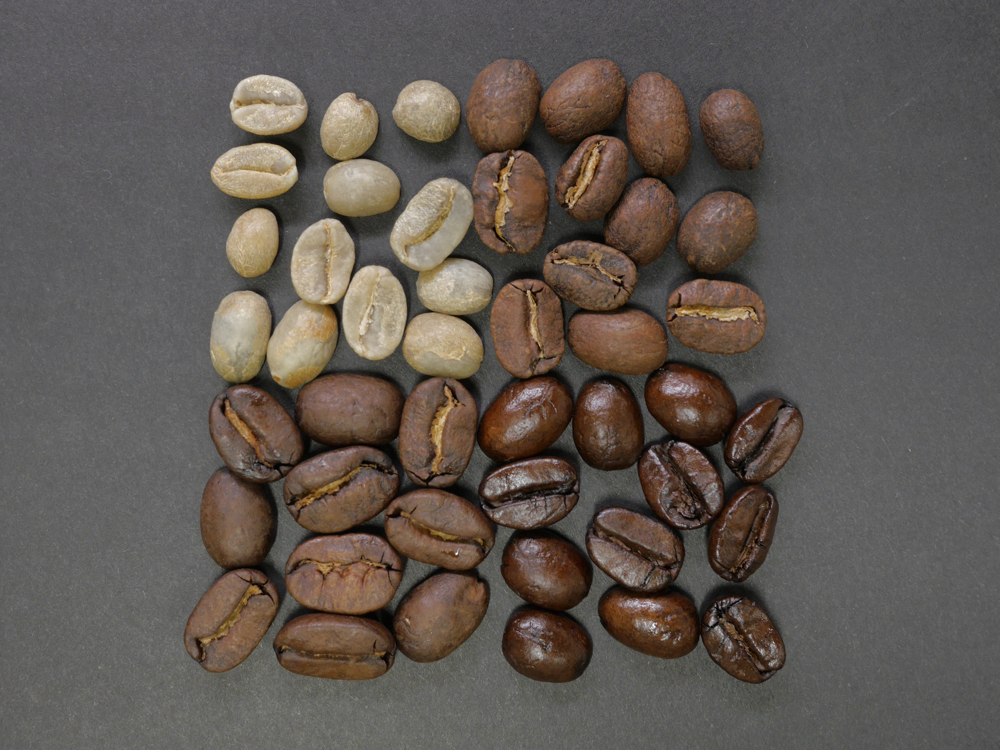

The journey begins with selecting high-quality coffee beans. Coffee is often sourced from various regions worldwide, each offering unique flavor profiles. Beans are chosen based on factors like origin, variety, and processing methods.

01
Sourcing
02
Roasting
The journey begins with selecting high-quality coffee beans. Coffee is often sourced from various regions worldwide, each offering unique flavor profiles. Beans are chosen based on factors like origin, variety, and processing methods.

03
Grinding
The journey begins with selecting high-quality coffee beans. Coffee is often sourced from various regions worldwide, each offering unique flavor profiles. Beans are chosen based on factors like origin, variety, and processing methods.
04
Brewing
The journey begins with selecting high-quality coffee beans. Coffee is often sourced from various regions worldwide, each offering unique flavor profiles. Beans are chosen based on factors like origin, variety, and processing methods.